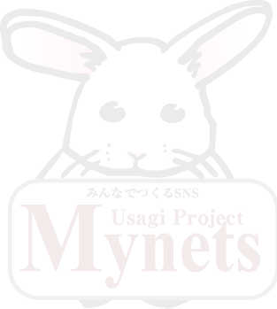

MyNETSVersion1.1.0へバージョンアップしよう！
UsagiProjectへようこそ
UsagiProjectのSNSエンジン「MyNETS Version1.1.0」へバージョンアップするためのツールがバージョンアップツールです。このツールは既存のMyNETS Version1.0.0やVersion1.0.1からMyNETS Version1.1.0へバージョンアップするためのツールです。
新規でMyNETSを導入する場合は、「インストーラー」をご利用ください。

アップグレードの対象について
当 UPGRADE TOOL は、MyNETS1.0.0、1.0.1からのバージョンアップを対象としています。
特にカスタマイズを施していない場合は、画面の指示通りすすめていくだけでバージョンアップすることができます。
処理の流れは次のようになります。
バージョンアップする場合は、MyNETSのアプリケーションファイルへすべて切り替えます。
個人的にファイルのカスタマイズ等を行っている場合は、カスタマイズを行ったファイルをインストール後適用するようにしてください。
当ツールは、アプリケーションをそのまま移行するためのツールです。
ファイルの転送
MyNETS1.1.0のファイルをダウンロードし、FTPクライアントまたはSSH等でご利用になるサーバーへアップロードしてください。
※確実にすべてのファイルがアップロードできるようにしてください。（FTP転送の場合、転送ミスで一部ファイルが正常にアップロードできないことがあります。その場合動作上不具合が出る可能性がありますので、ご注意ください。
ファイルが正常にアップロードできたかどうかを確認するためのツールを別途ご用意しています。
スクリプトチェックツールを UsagiProject 公式サイト、またはソースフォージからダウンロードして、サーバーに転送します。
すべてのファイルが正しくアップロードできたか確認してください。
MyNETSVersion1.1.0の大きな特徴として、public_htmlフォルダーを廃止し、ドメインでそのままSNSが動かせるように変更しました。
そのため、以前のファイルが残ったままファイルを転送しますと、思いもよらない不具合が出る可能性があります。必ずすべてのファイルを入れ替えるようにしてください。
MySQLデータベースの追加処理
MyNETS1.1.0では、現在利用しているMySQLのデータベースをそのまま利用し、Version1.1.0で追加管理されているテーブルのみを追加することで移行を行うことが可能です。
MyNETS1.1.0では互換性を維持しながら、独自のテーブル拡張を行っています。Version1.1.0グレードアップされた新しい機能を利用するためのテーブル等が追加されています。
追加されたテーブルの作成と、新たに追加されたテーブル内の項目を作成します。
MyNETSで追加されたテーブルおよび追加された項目の一覧はこちら
完了後の確認
DBの調整が完了しますと、バージョンアップは完了となります。
バージョンアップ完了後の画面では、管理画面へのリンクが表示されます。また、この時点でinstallフォルダーが残っていますと管理画面へのログインは行えません。必ずinsutallフォルダーを削除するか、別の名前にしてからログインを行ってください。
MyNETSでは、installフォルダーが残っていると、インストーラーを起動する設定になっています。バージョンアップのときは既存の運営サイトをメンテナンス中にして行うか、別のフォルダーにて実行し、完了後フォルダーを入れ替える、またはフォルダー名を既存のサイトに合わせることで安全にバージョンアップが完了します。
ウィザードを使って作業
さあ、あなたもバージョンアップツールを使ってMyNETS1.1.0へバージョンアップしましょう！